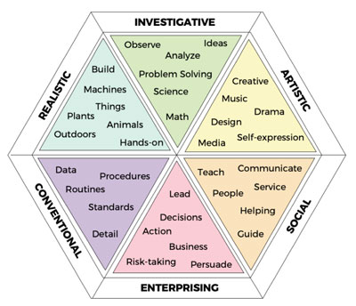

Career Exploration
Explore roles, assess your strengths, and use targeted resources to narrow down a path that fits you.
Start with Direction
Pick roles you are curious about, then learn what skills, tasks, and tools they require.
Self-Assessment: Understanding Your Professional Fit
Choosing a career path in the information field can be overwhelming given the diverse options—from UX design to data science. Self-assessment tools like the Holland Career Test help you identify environments where you are most likely to thrive based on your natural interests.

The RIASEC Model Explained
The Holland Code breaks down professional personalities into six distinct types. Most people are a combination of two or three:
- Realistic (Doers): Prefer working with objects, tools, and machines. UMSI Path: IT Infrastructure, hardware-focused roles.
- Investigative (Thinkers): Enjoy observing, learning, and solving abstract problems. UMSI Path: Data analytics, digital curation, research.
- Artistic (Creators): Value self-expression, innovation, and design. UMSI Path: UX/UI design, creative coding, graphic information.
- Social (Helpers): Driven by training, informing, or helping others. UMSI Path: Library science, user advocacy, community management.
- Enterprising (Persuaders): Enjoy leading, influencing, and managing for organizational goals. UMSI Path: Product management, consulting, tech entrepreneurship.
- Conventional (Organizers): Prefer working with data, details, and structured processes. UMSI Path: Information policy, database administration, taxonomy.
Explore Resources
The UMSI Career Development Office provides specialized tools to help you identify your path. Consider browsing UMSI alumni profiles or professional association websites to see where an MSI degree can take you.
Quick Steps to Get Started
Follow these four steps to begin your career discovery journey:
- List 2–3 role types you want to explore (e.g., UX Researcher, Data Analyst).
- Find 3 job posts and highlight repeated skills.
- Talk to 1 person (peer or alumni) and take notes on their experience.
- Choose 1 small project to test your interest in the field.